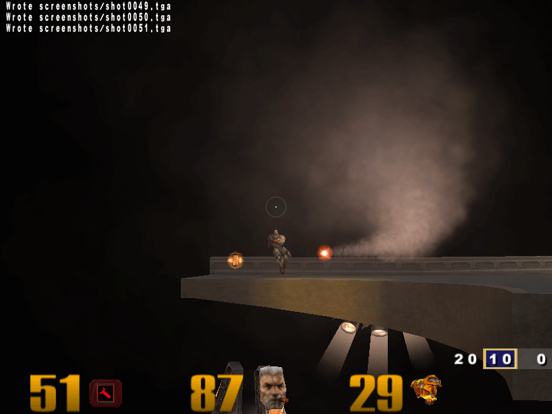
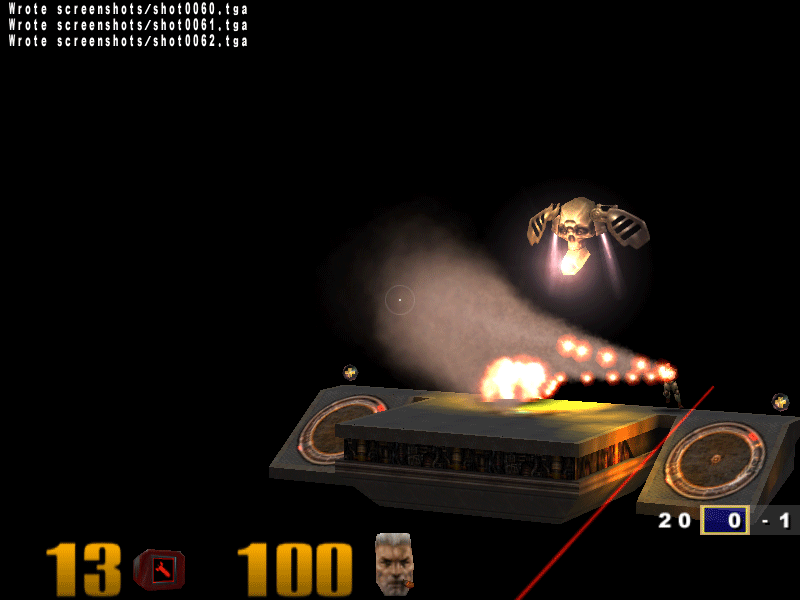
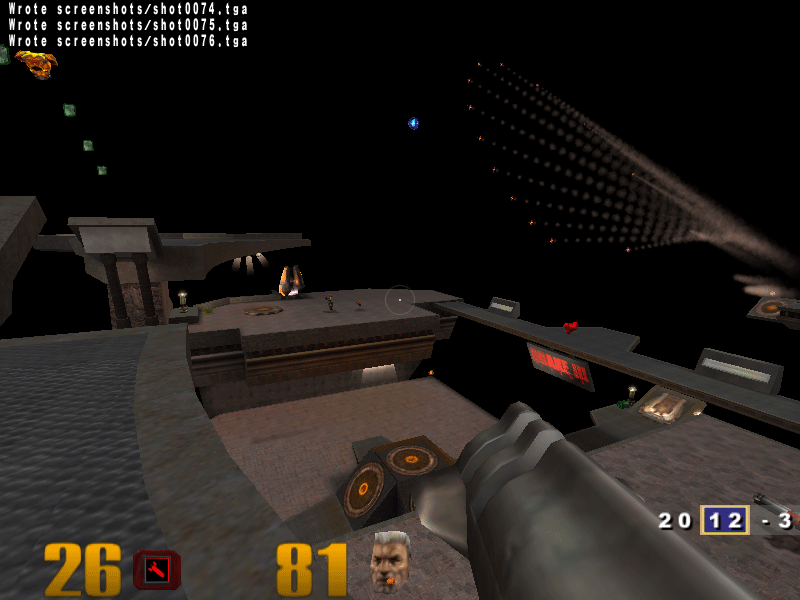

|
||||
|
In this article I have shown how to compile and modify the Quake 3 source code to create a Homing Missile. This article is intended for beginners. Background Quake III was released few years back (somewhere in 2001-2002 if I am not wrong). At the same time, I was looking forward to buy a new PC and while researching for the same, I got a computer magazine with Quake III demo. That's when I decided that Quake III was going to be my benchmark for the new PC. Excellent game and my favorite till date. Now let me stop telling stories and get back to the point. Source code Quake3's source code was launched some time after its release. The code does not have a hell lot of comments, but its very readable and understandable. You must know C and a bit of 3D vector mathematics. Mathematics I suppose can be learnt in case you don't have that background. At times you might get stuck in understanding the code due to vector operations performed. Just take a pen and paper and calculate it down, life will be much easier with those two objects. The entire source code has not been released. Though I don't know which part, a major part like the rendering engine could be under cover. Quake3's 3D engine has been proven as one of the best 3D engines made and some people have also said that nobody can write better code than the one written for this engine. Recently I also had a chance to go through the Microsoft Techfest, in which, one of the demonstrated research project was based on Quake III. FYI: It was regarding improving multiplayer gaming performance over a low bandwidth network around 100kbps. So, there is a lot of potential in reusing its code if your research/application requirements fit the same. NOTE: Quake 3's source code is free does not mean that it's game data is free. And you cannot play game without the game data (maps, sounds, music, bot models, etc.)That's why you still need to buy an original Quake 3 CD. Why am I re-writing this? You will find many websites with bits and pieces of information for compiling and modifying Quake 3 source. Inadequate or incorrect informations leads to frustration most of the time as it was the case with me. It took a lot of time for me to finally compile and run quake 3 from the compiled code. Creating mods (relatively means modifying source) is another story, but that was fun. The code-change illustrated here again took a lot of time. Understanding and tweaking the code given here is also a good way of learning some basics about this game. Compiling the source code You won't find the entire source code here, but you can download it from Id software's website . Attached are the source files for the modifications. You can also see the compiled Mods here . Before you start, it is also important to check the following:
Now follow the steps given below to complie the source code.
Now to run the game with your compiled code, just double-click the batch file, and you are ready to play. An important step has been covered by this time.
NOTE: Debugging is (as usual) possible in Quake 3 too. That is not covered in this article. NOTE: Actually you don’t need to change the exe until you want some changes in the quake3 EXE project code. But I recommend this since I have noticed sometimes the original EXE takes a lot of time to load when we implement our modifications. WARNING: While making your modifications it is recommended to run Quake 3 in windowed mode ( and not the normal full screen mode). You can switch to windowed mode by the pressing Alt+Enter. Quake 3 remembers the configuration (atleast on my PC) while loading the next time. Runtime errors may hang up your inputs in full screen mode and thereby forcing you to restart without proper shutdown.
Before you modify the code (some basics) It is important to understand some concepts of Quake 3 before you modify the code. Here I am defining only very small part required to understand the code illustrated here. There are lots of things that you will find out once you have started doing more than what's presented here. Anything that is created in the game is called an entity. Every entity created in Quake 3 has an associated think function. The think function defines the kind of behavior the entity will exhibit at various times in the game. For example if you see the fire_rocket method in g_missile.c under the game project (under quake3.sln), you will find lines stating: bolt->nextthink = level.time + 15000; bolt->think = G_ExplodeMissile; //Game time here is in milliseconds. G_ExplodeMissle is a think function for the rocket. This means that after 15 seconds the rocket will explode. Let us call this time frame as the Next Think time. We can have our own think function that will define what the rocket will do after a time specified. By default a missile entity doesn’t require processing once released, but depending on the entity type and its behavior , the next think time can be different.
The Homing Missile By definition, homing missile is a kind of missile which when fired will find a nearest target and steer itself towards it and finally blast into the target. In Quake 3, we will enable firing of homing missile from the rocket launcher itself. A player can select whether he wants to fire a simple rocket or homing missile (same rocket behaving differently). We can divide this task into two parts:
Taking inputs from the player First we must have a place where we can store the input of the player. Therefore, we insert a variable homingMissle in clientPersistant_t typed structure. This structure is declared in the file g_local.h under the game project. The changed structure is shown below. // client data that stays across multiple respawns, but is cleared
// on each level change or team change at ClientBegin()
typedef struct {
clientConnected_t connected;
usercmd_t cmd; // we would lose angles if not persistant
qboolean localClient; // true if "ip" info key is "localhost"
qboolean initialSpawn; // the first spawn should be at a cool location
qboolean predictItemPickup; // based on cg_predictItems userinfo
qboolean pmoveFixed; //
char netname[MAX_NETNAME];
int maxHealth; // for handicapping
int enterTime; // level.time the client entered the game
playerTeamState_t teamState; // status in teamplay games
int voteCount; // to prevent people from constantly calling votes
int teamVoteCount; // to prevent people from constantly calling votes
qboolean teamInfo; // send team overlay updates?
int homingMissle; // is homing missle on for the client
} clientPersistant_t;
You must be wondering why I am using int when I can use a boolean. That's because in the code I am also introducing different types of homing missiles. Their think functions are different. I will be explaining only the basic homing missile code here. Once we have placed a varible here, we must initialize it with a default value whenever a new player is created. This is done in function ClientBegin(...) in file g_client.c as shown below. void ClientBegin( int clientNum ) {
gentity_t *ent;
...........
ent->client = client;
client->pers.homingMissle = 0;
client->pers.connected = CON_CONNECTED;
client->pers.enterTime = level.time;
...........
// count current clients and rank for scoreboard
CalculateRanks();
}
Now, we have to take input from the player during the game and set it to the homingMissile variable. If you have played Quake 3, you will know that commands can be given by the sequence "Press '~'. Then give command as "/CommandName command-parameters(if any)". So lets say our command name is homing. We will not be using any parameters with the command. So this variable can be toggled within its value-range. The range used in this code is from 0 to 5. i.e. When the player intiates game the value is 0. Then when player gives homing command, the value is 1. Thereafter, 2,3,4,5 and finally after 5 it will be back to 0. To achieve such functionality, we will have to introduce our command in the file g_cmds.c.This we do by modifying the method ClientCommand(...) in this file. void ClientCommand( int clientNum ) {
gentity_t *ent;
............
else if (Q_stricmp (cmd, "stats") == 0)
Cmd_Stats_f( ent );
else if (Q_stricmp (cmd, "homing") == 0)
Cmd_SetHoming_f (ent);
else
trap_SendServerCommand( clientNum, va("print \"unknown cmd %s\n\"", cmd ) );
}
As you can see we also used a new method Cmd_SetHoming_f(...). This is declared as shown below //New method added
void Cmd_SetHoming_f (gentity_t *ent)
{
//0 -> off
//1 -> Constant speed
//2 -> Variable speed
//3 -> Fireworks with varible speed
//4 -> Fireworks with varible speed and wide angle
//5 -> Fireworks with varible speed and all view
if (ent->client->pers.homingMissle == 0)
{
trap_SendServerCommand( ent-g_entities, va("print \"Homing Missiles with constant speed
are on.\n\""));
ent->client->pers.homingMissle = 1;
}
else if (ent->client->pers.homingMissle == 1)
{
trap_SendServerCommand( ent-g_entities, va("print \"Homing Missiles with variable speed
are on.\n\""));
ent->client->pers.homingMissle = 2;
}
else if (ent->client->pers.homingMissle == 2)
{
trap_SendServerCommand( ent-g_entities, va("print \"Homing Missiles with variable speed
and fireworks are on.\n\""));
ent->client->pers.homingMissle = 3;
}
else if (ent->client->pers.homingMissle == 3)
{
trap_SendServerCommand( ent-g_entities, va("print \"Homing Missiles with variable speed,
fireworks and wide angle are on.\n\""));
ent->client->pers.homingMissle = 4;
}
else if (ent->client->pers.homingMissle == 4)
{
trap_SendServerCommand( ent-g_entities, va("print \"Homing Missiles with variable speed,
fireworks and all view are on.\n\""));
ent->client->pers.homingMissle = 5;
}
else
{
trap_SendServerCommand( ent-g_entities, va("print \"Homing Missiles are off.\n\""));
ent->client->pers.homingMissle = 0;
}
}
So now whenever the player gives command "/homing", the values will be toggled within the range and appropriate behavior will be exhibited by the missiles. You can also bind some key say 'h' to the homing command. Give the command /bind h homing .As you can see, different values have different behaviors stated. The behavior for value=1 will be explained here, the rest will be briefly stated later.
Changing the behavior of the new missile Now once we are done with accepting input, we need to change the behavior of the missile based on this value. As discussed before, to achieve this we will have create a new think function that will have the necessary code to exhibit different behavior. Re-stating: if you see the fire_rocket method in g_missile.c under the game project you will find lines stating: bolt->nextthink = level.time + 15000; bolt->think = G_ExplodeMissile; //Game time here is in milliseconds. G_ExplodeMissile is a think function for the rocket. This means that after 15 seconds the rocket will explode. 15 seconds is the next think time here. We will point it to a different think function missile_think. Also a homing missile needs to move a bit slower initially. This is shown below gentity_t *fire_rocket (gentity_t *self, vec3_t start, vec3_t dir) {
gentity_t *bolt;
............
bolt->classname = "rocket";
//0 -> off
//1 -> Constant speed
//2 -> Variable speed
//3 -> Fireworks with varible speed
if(self->client->pers.homingMissle == 1)
{
bolt->think = missile_think;
bolt->nextthink = level.time + 1;
}
else if(self->client->pers.homingMissle == 2)
{
bolt->think = missile_think_variable_speed;
bolt->nextthink = level.time + 1;
}
else if(self->client->pers.homingMissle == 3
|| self->client->pers.homingMissle == 4
|| self->client->pers.homingMissle == 5)
{
bolt->think = missile_think_variable_speed_fireworks;
bolt->nextthink = level.time + 1;
}
else
{
bolt->nextthink = level.time + 15000;
bolt->think = G_ExplodeMissile;
}
............
............
bolt->s.pos.trType = TR_LINEAR;
bolt->s.pos.trTime = level.time - MISSILE_PRESTEP_TIME; // move a bit on the very first frame
VectorCopy( start, bolt->s.pos.trBase );
if (self->client->pers.homingMissle == 1)
{
// Initial speed of homing missile has to be less
VectorScale( dir, 500, bolt->s.pos.trDelta );
}
else
{
VectorScale( dir, 900, bolt->s.pos.trDelta );
}
SnapVector( bolt->s.pos.trDelta ); // save net bandwidth
VectorCopy (start, bolt->r.currentOrigin);
return bolt;
}
The speed is initially set to 500. In my code, the speed increases once target is found, but I feel it is completely personal choice. Now that we have pointed to another think function, we must define it. Before defining the function, let me explain the behavior that the think function will exhibit in the game environment.
The code for this think function is also placed in g_missile.c just under the line "#define MISSILE_PRESTEP_TIME 50". It is shown below. #define MISSILE_PRESTEP_TIME 50
gentity_t *findNearestTargetInRadius (gentity_t *ent, float rad, vec3_t *pTargetDirectionVector,
vec3_t missileNormalizedForwardDirection, double fVisionCone)
{
gentity_t *pEntity = NULL;
gentity_t *pTarget = NULL;
vec3_t pEntityMidBodyVector;
vec_t fEntityMidBodyVectorLengh=0;
vec_t fTargetDistance=0;
vec3_t temp_vector;
trace_t trace;
// Check for all the entities and find atleast one in radius
for (pEntity = g_entities; pEntity < &g_entities[level.num_entities]; pEntity++)
{
if (!pEntity->inuse) // If not on map, continue
continue;
// Hit the player in the body and not in feet
// Add the mins and maxs. Then divide by two.
// Add the current origin to it.
// That would yeild the middle of the body (bounding box atleast)
VectorAdd(pEntity->r.mins,pEntity->r.maxs,pEntityMidBodyVector);
VectorScale(pEntityMidBodyVector,0.5,pEntityMidBodyVector);
VectorAdd(pEntity->r.currentOrigin,pEntityMidBodyVector,pEntityMidBodyVector);
// Now subtract to get a proper direction.
VectorSubtract(pEntityMidBodyVector,ent->r.currentOrigin,pEntityMidBodyVector);
// We calculated the distance vector above. So this is the distance to entity.
fEntityMidBodyVectorLengh = VectorLength(pEntityMidBodyVector);
// If the distance is greater than the given radius, leave it.
if (fEntityMidBodyVectorLengh > rad)
continue;
// Check the entity for different conditions.
if(pEntity!=NULL)
{
if (!pEntity->client)
continue;
if (pEntity == ent->parent)
continue;
if (pEntity->health <= 0)
continue;
if (pEntity->client->sess.sessionTeam == TEAM_SPECTATOR)
continue;
if ( OnSameTeam( pEntity, ent->parent ) )
continue;
// Normalize the direction vector
VectorCopy(pEntityMidBodyVector,temp_vector);
VectorNormalize(temp_vector);
// Lesser the value of vision cone, wider it will be.
// Value 1 will narrow down the cone.
if ( fVisionCone > 0.01
&&
DotProduct(missileNormalizedForwardDirection, temp_vector) < fVisionCone )
continue;
// Check if visible
trap_Trace (&trace, ent->s.pos.trBase, NULL, NULL,
pEntity->s.pos.trBase, ent->s.number, MASK_SHOT );
if ( trace.contents & CONTENTS_SOLID ) // If not visible, then continue
continue;
// Passed all the tests, it is a possible target.
// Check if there is closer target.
// Added 100 so that missle does not change targets
// frequently in case of players close to each other
if ((pTarget == NULL) || (fEntityMidBodyVectorLengh < fTargetDistance+100))
{
pTarget=pEntity;
// Copy the direction vector for the think function.
// We dont need to recalculate it there.
VectorCopy(pEntityMidBodyVector, (*pTargetDirectionVector));
fTargetDistance = fEntityMidBodyVectorLengh;
}
}
}
return pTarget;
}
void missile_think( gentity_t *ent ) {
gentity_t *pTarget = NULL;
vec3_t targetdir,forward;
int speed=900;
VectorCopy(ent->s.pos.trDelta, forward);
VectorNormalize(forward);
pTarget = findNearestTargetInRadius(ent,5000,&targetdir, forward,0.7);
if(pTarget!=NULL)
{
// Steer the missile to the target.
// Lower the value in place of 0.05, larger the turning circle.
VectorMA(forward, 0.05, targetdir, targetdir);
VectorNormalize(targetdir);
VectorScale(targetdir, speed, ent->s.pos.trDelta);
}
// These two lines are used to smoothen the missile trajectory.
// Removing these will exhibit jerky movement.
VectorCopy( ent->r.currentOrigin ,ent->s.pos.trBase );
ent->s.pos.trTime = level.time;
ent->nextthink = level.time + 1;
}
I feel the comments placed above are self-explanatory, so not discussing the same. In the attached code, you will find multiple missile_think functions and in total five different homing modes. Here's a brief on those: Homing Missiles with constant speed: These are the ones shown above. Once launched the missile steers towards the target at same speed. Homing Missiles with variable speed: I like these one the most and designed for higher precision to hit the target. If the target is far enough, the missile will increase its speed to come close to it. Once it is quite closer, it takes a relative measurement of the angle between itself and target. If angle is too less, missile will again increase its speed and hit the target before it moves out of sight. It is capable of shooting a target in mid-air almost every time. Homing Missiles with variable speed and fireworks: Well this idea came from the epic and one time everybody's favorite tele-serial Ramayan, where, in the wars one arrow fired would spawn multiple arrows. Similarly this function facilitates spawning of non-homing rockets when the target is closer. Absolutely no way to escape. Not much interesting to play with. But you'll get to see some great fireworks. Homing Missiles with variable speed, fireworks and wide angle: The visual cone is much spread out. Rest is same as above Homing Missiles with variable speed, fireworks and all view: Same as above. The visual cone is completely open. Expect the missile to take hair-pin turns when using this. Concluding... Here, in the code, I have set some values in code, for the homing missile, such that it works with high precision and the target cannot escape. Now that's a kind of military scenario. In game playing, that will be a real tough scenario and will not be interesting. I leave it upto you to change the code so that the fun part in gaming is not lost. Learning Quake 3 can be real fun. Some day it can be used to teach you game development, simulation, 3D geometry and vector mathematics. And besides playing games, its engine can be quite useful for creating 3D UI applications, researching on building architectures,etc. At many places I have wrongly spelled "Missile" as "Missle". Please excuse that. May be I was hungry for "i" when writing this. Photo session Lots of reading and coding. Here are some screen shots.  Grunt being chased by the homing missile
 Above: Grunt under fire (Homing missile with fireworks). Below: Grunt has a narrow escape. Missiles scatter in air. 
Please do not hesitate to ask queries/suggestions/issues/anything. Click here for contact information. |
||||